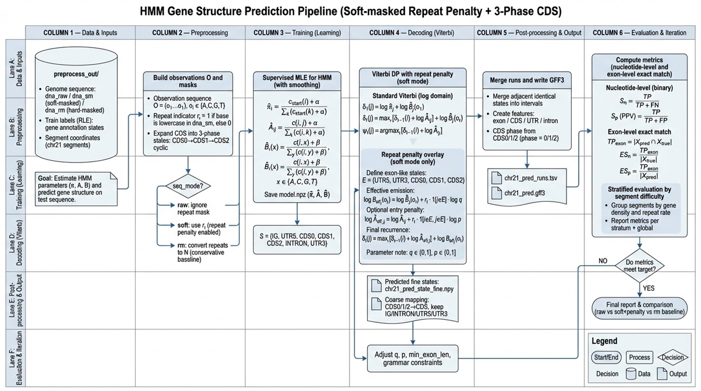

Eukaryotic Gene Structure Prediction with HMM
- Data engineering (FASTA+GFF3 → aligned samples): Addressed real-genome issues (multi-transcript overlaps, long N-runs, repeat-masked regions) by parsing Ensembl FASTA/GFF3 with strict 1-based coordinate handling, computing genome-wide GC/N/lowercase statistics, and slicing chr20/chr21 into train/validation segments using long N-runs as hard boundaries; exported reproducible artifacts (segments/labels/observations) in TSV/NPZ for downstream training and auditing.
- Structured labeling (annotation → 5-state targets): Mapped each nucleotide to mutually exclusive coarse states (IG, IN, UTR5, CDS, UTR3), and compared two annotation consolidation strategies (union-of-transcripts vs representative-transcript) to resolve conflicts while retaining protein-coding coverage; this produced clean supervised targets that can be consistently re-generated and reused.
- Modeling & decoding (multi-state HMM + CDS phase): Implemented a supervised multi-state HMM with explicit CDS phase modeling (3-phase expansion) and Dirichlet/Laplace smoothing for stable parameter estimation; performed Viterbi decoding in log-space, then converted predicted state paths into standardized GFF3 outputs (CDS/exon-level intervals) to make results compatible with common genome tools.
- Repeat-aware innovation (hard case focus): Identified that naïvely expanding the emission alphabet to treat softmask lowercase as new symbols (ACGTacgt) can amplify false-positive exons in repeat-rich regions; replaced this with repeat-aware decoding via (i) explicit repeat states (e.g., IG_R/INTRON_R) and (ii) a softmask-driven penalty injected into the Viterbi objective to discourage exon-like explanations inside repeats—an approach aligned with repeat-penalty mechanisms used in modern eukaryotic gene predictors.
- Evaluation loop (nucleotide + exon exact match): Built evaluation scripts reporting nucleotide-level Sn/Sp (PPV) and exon-level exact-match metrics, ran ablations across repeat-handling variants, and iterated hyperparameters for the repeat penalty; on held-out chr21 validation segments, the tuned softmask+penalty variant reached balanced nucleotide-level performance (Exon Sn/Sp ≈ 0.476/0.457; CDS Sn/Sp ≈ 0.528/0.541) while keeping exon-exact evaluation as the primary error signal for further improvements.
